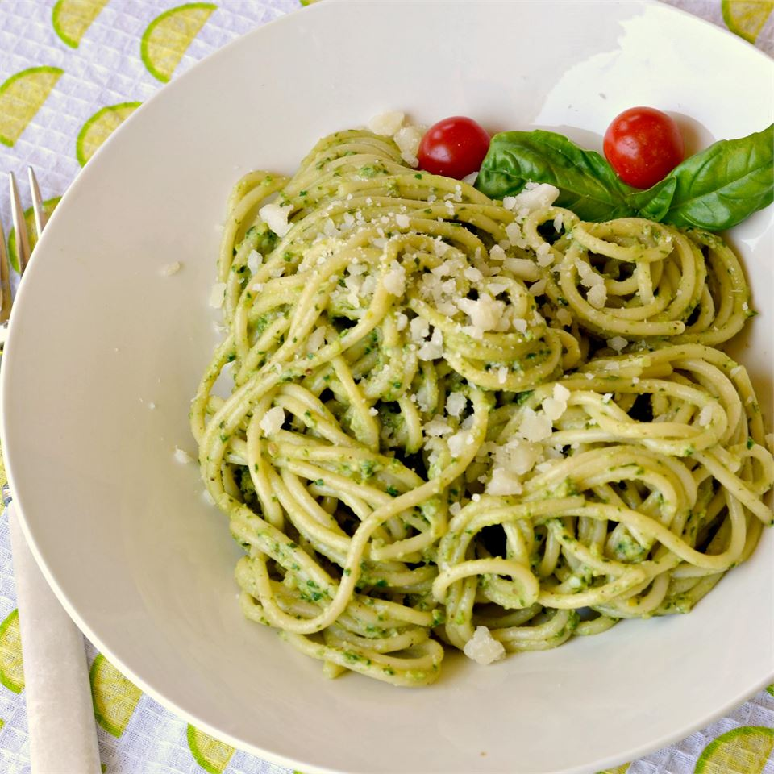

Healthy Pesto Pasta Recipe

Light Lemon Pesto Pasta
Light, yet full of flavor, this pesto is perfect tossed with hot spaghetti for a quick dinner. It is also excellent as a pizza sauce or smeared on hot French bread. It freezes well to preserve the bounty of summer basil.
Ingredients
- 1 (16 ounce) package spaghetti
- 6 cloves garlic
- 2 cups loosely packed baby spinach leaves
- 1 cup firmly packed basil leaves
- ½ cup chopped walnuts
- ¼ cup lemon juice
- ¼ teaspoon lemon zest
- ¼ teaspoon salt
- 2 tablespoons olive oil
Steps
- Bring a large pot of lightly salted water to a boil. Cook spaghetti at a boil until cooked through but firm to the bite, about 12 minutes; drain. Transfer spaghetti to a large bowl.
- Put cubed Romano cheese in the bowl of a food processor; process until coarsely grated, about 30 seconds. Put garlic into the food processor and process until the cheese and garlic are combined. Add spinach, basil, walnuts, lemon juice, lemon zest, and salt; process until the mixture comes together into a thick paste. Scrape down the sides of the bowl with a spatula.
- With food processor running, drizzle olive oil into the mixture. Continue processing until the oil is integrated smoothly.
- Pour sauce over spaghetti and toss to coat.